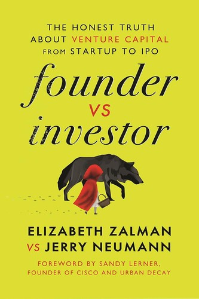

伊丽莎白·扎尔曼（Elizabeth Zalman）是基础设施与信息安全领域的连续创业者，曾两度出任风险投资支持公司的CEO，将第一家公司带向成功退出，将第二家公司发展为估值数亿美元的业务，累计从顶级投资机构募集逾一亿美元风险资本。杰里·纽曼（Jerry Neumann）是拥有二十五年经验的风险投资人，曾被《商业内幕》评选为"纽约五十位最重要的风险投资人"之一，投资组合涵盖Datadog、Trade Desk等在内的多家成功企业。《创始人与投资人》出版于2023年9月，由HarperCollins领导力出版社发行，采用了一种在商业书籍中极为罕见的双声道结构：每一个主题，创始人和投资人各自从自身立场出发独立发声，读者得以同时看到同一问题在两个利益相关方眼中截然不同的面貌。
本书直面风险投资关系中最核心的结构性张力：创始人与投资人之间存在根本性的激励不一致。创始人追求的是将一个具体的商业愿景变为现实，他们的成功往往以数十年的个人投入为代价，失败的代价也由他们最直接地承担；投资人管理的是一个投资组合，单笔投资的胜负由整体回报分布决定，他们可以接受个别企业的失败只要有一两家产生足够大的回报倍数（通常要求10倍乃至100倍）。这种结构性差异在平静时期往往隐而不发，却在公司遭遇融资困难、战略转型或创始人替换等关键节点上爆发为真实的权力冲突。书中详细解剖了Term Sheet条款的实际含义、董事会的权力结构、融资谈判中的信息不对称，以及创始人在不同情景下应当如何保护自身权益。
"Invest Like the Best"播客创始人帕特里克·欧肖内西（Patrick O'Shaughnessy）将本书称为"关于创始人与投资人关系中最棘手部分的权威指南"（the definitive guide to the trickiest parts of the relationships between founders and investors）。Kirkus Reviews的书评称其为"最罕见的商业书籍之一——能够提供真正可操作建议，且不借助空洞套话"（The rarest of business books, one that provides genuinely actionable counsel delivered without empty cliches）。与市面上大量将风险投资关系描述为双赢合作的书籍不同，本书选择以诚实的冲突视角作为叙事底色，这种坦诚本身已成为其核心价值所在。
对于准备或正在接受风险投资的创业者而言，《创始人与投资人》是一本在进入谈判桌前必须认真阅读的风险地图——它不传授成功励志，而是揭示那些通常只有经历过才能理解的游戏规则。对于希望理解创业生态真实运作逻辑的投资者和观察者，本书提供了一个来自内部人的双面视角，使人得以超越公关话语，直视风险投资关系中那些很少被公开讨论的结构性矛盾。这种直视，正是做出清醒判断的前提。